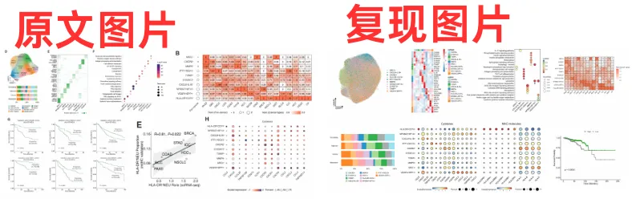
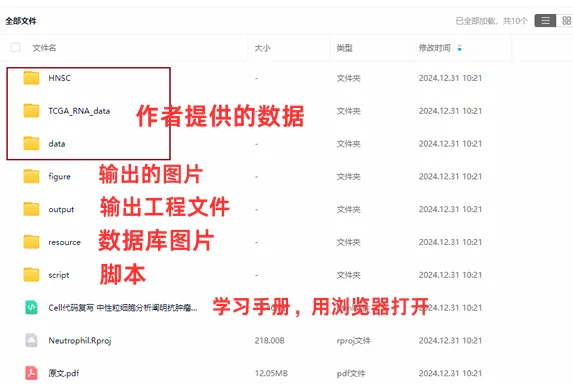

《Cell》复现|中性粒细胞scRNA-seq图谱阐明抗肿瘤抗原呈递效力
原文：https://mp.weixin.qq.com/s?__biz=MzAwMzIzOTk5OQ==&mid=2247526776&idx=1&sn=99eb6a16c7bf345445b6ff4b61110138&chksm=9b3c1028ac4b993e5cdd2ef10956a2b9fbea0075487feec8fcfaef442b8c5eabd1500eb9c2c3#rd 合集：单细胞教程全收录 / 全文复现

学习手册

 本次教程中，我们复写了题为"Neutrophil profiling illuminates anti-tumor antigen-presenting potency "的文章(DOI: 10.1016/j.cell.2024.02.005)。中性粒细胞是最丰富的免疫细胞之一，负责病原体防御，但在不同类型的癌症中发挥着相反的作用。由于中性粒细胞的半衰期较短 ，研究它们在癌症中的命运变化充满挑战。这篇文章的结果揭示了中性粒细胞在癌症中的异质性，并为抗原呈递中性粒细胞的治疗机会提供了新的思路。本文分析了来自143名 患者、225个 样本的17种 癌症类型的单细胞转录组数据，发现中性粒细胞 具有10种 不同的状态，包括炎症、血管生成和抗原呈递。主要发现包括：(1)抗原呈递程序与大多数癌症的良好生存预后相关，并且通过亮氨酸代谢和组蛋白H3K27ac修饰激活。(2)中性粒细胞能够促进抗原特异性和非特异性T细胞反应。(3)亮氨酸饮食或中性粒细胞输送可以调节免疫平衡，从而提高小鼠癌症模型中抗PD-1治疗的效果。(4)我们还额外加入了scRNA联合TCGA数据分析流程进行生存分析验证
本次教程中，我们复写了题为"Neutrophil profiling illuminates anti-tumor antigen-presenting potency "的文章(DOI: 10.1016/j.cell.2024.02.005)。中性粒细胞是最丰富的免疫细胞之一，负责病原体防御，但在不同类型的癌症中发挥着相反的作用。由于中性粒细胞的半衰期较短 ，研究它们在癌症中的命运变化充满挑战。这篇文章的结果揭示了中性粒细胞在癌症中的异质性，并为抗原呈递中性粒细胞的治疗机会提供了新的思路。本文分析了来自143名 患者、225个 样本的17种 癌症类型的单细胞转录组数据，发现中性粒细胞 具有10种 不同的状态，包括炎症、血管生成和抗原呈递。主要发现包括：(1)抗原呈递程序与大多数癌症的良好生存预后相关，并且通过亮氨酸代谢和组蛋白H3K27ac修饰激活。(2)中性粒细胞能够促进抗原特异性和非特异性T细胞反应。(3)亮氨酸饮食或中性粒细胞输送可以调节免疫平衡，从而提高小鼠癌症模型中抗PD-1治疗的效果。(4)我们还额外加入了scRNA联合TCGA数据分析流程进行生存分析验证
本教程基于Linux中的Rstudio环境演示，计算资源不足的同学可参考： 足够支持你完成硕博生涯的生信环境 配置一个心仪的工作站(硬件+环境配置) 独享服务器，生信分析不求人 为实验室准备一份生物信息学不动产
本教程复现集锦 ：

-Biomamba

所见即所得
学习手册以html文件格式提供，可在浏览器中打开并翻阅学习：
** **
教程目录 ：
一、文献解读
1.0 原文回顾1.1 背景介绍1.2 主要内容1.3 复现集锦
二、准备工作
2.1 硬件准备 2.2 单细胞基础
三、数据下载、处理和可视化
3.1 读取数据、数据整理、信息整理3.2 UMAP图3.3 细胞分组比例图 3.4 细胞Marker热图3.5 Ro/e分析3.6 基因分组表达气泡图3.7 亚群功能富集分析3.8 亚群signature构建
四**、**TCGA数据下载、处理和可视化
1 使用GDC门户下载数据2.使用TCGABiolinks下载数据
五、版本信息
六、** 参考**
文末下载链接中包含的内容：

测试文件约8.94GB ，大家注意按需下载！
解锁前需阅读：2025订阅须知
订阅后获取学习手册下载链接：